4. The J2EE Web Service for Appointments
Let’s return to the architecture of the application to be built:
 |
In this section, we focus on building the J2EE web service [1] running on a Sun/Glassfish server.
4.1. The Database
The database, which we will call [ dbrdvmedecins], is a MySQL5 database with four tables:

4.1.1. The [MEDECINS] table
It contains information about the doctors managed by the [RdvMedecins] application.
 |  |
- ID: the doctor’s ID number—the table’s primary key
- VERSION: a number identifying the version of the row in the table. This number is incremented by 1 each time a change is made to the row.
- LAST_NAME: the doctor’s last name
- FIRST_NAME: the doctor's first name
- TITLE: their title (Ms., Mrs., Mr.)
4.1.2. The [CLIENTS] table
The clients of the various doctors are stored in the [CLIENTS] table:
 |  |
- ID: ID number identifying the client - primary key of the table
- VERSION: number identifying the version of the row in the table. This number is incremented by 1 each time a change is made to the row.
- LAST NAME: the client's last name
- FIRST NAME: the client’s first name
- TITLE: their title (Ms., Mrs., Mr.)
4.1.3. The [SLOTS] table
It lists the time slots when appointments are available:
 |
 |
- ID: ID number for the time slot - primary key of the table (row 8)
- VERSION: A number identifying the version of the row in the table. This number is incremented by 1 each time a change is made to the row.
- DOC_ID: ID number identifying the doctor to whom this time slot belongs – foreign key on the DOCTORS(ID) column.
- START_TIME: Start time of the time slot
- MSTART: Start minutes of the time slot
- HFIN: slot end time
- MFIN: End minutes of the slot
The second row of the [SLOTS] table (see [1] above) indicates, for example, that slot #2 begins at 8:20 a.m. and ends at 8:40 a.m. and belongs to doctor #1 (Ms. Marie PELISSIER).
4.1.4. The [RV] table
It lists the appointments booked for each doctor:
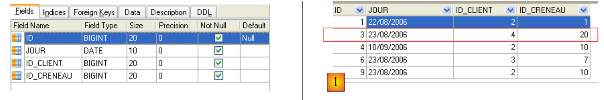 |
- ID: unique identifier for the appointment – primary key
- DAY: day of the appointment
- SLOT_ID: appointment time slot – foreign key on the [ID] field of the [SLOTS] table – determines both the time slot and the doctor involved.
- CLIENT_ID: ID of the client for whom the reservation is made – foreign key on the [ID] field of the [CLIENTS] table
This table has a uniqueness constraint on the values of the joined columns (DAY, SLOT_ID):
If a row in the [RV] table has the value (DAY1, SLOT_ID1) for the columns (DAY, SLOT_ID), this value cannot appear anywhere else. Otherwise, this would mean that two appointments were booked at the same time for the same doctor. From a Java programming perspective, the database’s JDBC driver throws an SQLException when this occurs.
The row with ID equal to 3 (see [1] above) means that an appointment was booked for slot #20 and client #4 on 08/23/2006. The [SLOTS] table tells us that slot no. 20 corresponds to the time slot 4:20 PM – 4:40 PM and belongs to doctor no. 1 (Ms. Marie PELISSIER). The [CLIENTS] table tells us that client no. 4 is Ms. Brigitte BISTROU.
4.2. Database Creation
Create the MySQL database [dbrdvmedecins] using the tool of your choice. To create the tables and populate them, you can use the [createbd.sql] script provided. Its contents are as follows:
4.3. Server-side architecture components
Let’s return to the architecture of the application to be built:
 |
On the server side, the application will consist of:
- a JPA layer that allows interaction with the database using objects
- an EJB responsible for managing operations with the JPA layer
- a web service responsible for exposing the EJB interface to remote clients in the form of a web service.
Elements (b) and (c) implement the [DAO] layer shown in the previous diagram. We know that an application can access a remote EJB via the RMI and JNDI protocols. In practice, this limits clients to Java clients. A web service uses a standardized communication protocol that various languages implement: .NET, PHP, C++, ... This is what we want to demonstrate here using a .NET client.
For a brief introduction to web services, see the course [ref1], paragraph 14, page 109.
A web service can be implemented in two ways:
- by a class annotated with @WebService that runs in a web container
 |
- by an EJB annotated with @WebService that runs in an EJB container
 |
 |
We will use the first solution here:
In the course [ref1], paragraph 14, page 109, you will find an example using the second solution.
4.4. , and Hibernate configuration for the GlassFish server
Depending on the version, the GlassFish V2 server included with NetBeans may not have the Hibernate libraries required by the JPA/Hibernate layer. If, as you continue through the tutorial, you find that GlassFish does not provide a JPA/Hibernate implementation, or if an exception occurs during service deployment indicating that the Hibernate libraries cannot be found, you must add the libraries to the folder [<glassfish>/domains/domain1/lib/ext] and then restart the GlassFish server:
 |
|
The Hibernate libraries are included in the ZIP file that accompanies the tutorial.
4.5. NetBeans' automatic generation tools
Let’s return to the architecture we need to build:
 |
With NetBeans, it is possible to automatically generate the [JPA] layer and the [EJB] layer that controls access to the generated JPA entities. It is useful to be familiar with these automatic generation methods because the generated code provides valuable insights into how to write JPA entities or the EJB code that uses them.
We will now describe some of these automatic generation tools. To understand the generated code, you need a solid understanding of JPA entities [ref1] and EJBs [ref2].
Creating a NetBeans connection to the database
- Start the MySQL 5 DBMS so that the database is available
- Create a NetBeans connection to the [dbrdvmedecins] database
 |
- In the [Files] tab, under the [Databases] section [1], select the MySQL JDBC driver [2]
- Then select the [3] "Connect Using" option to create a connection to a MySQL database
- In [4], enter the requested information
- then confirm in [5]
 |
- In [6], the connection is created. You can see the four tables in the connected database.
 |
- In [1], create a new application, an EJB module
- In [2], select the [Java EE] category, and in [3], select the [EJB Module] type
 |
- In [4], choose a folder for the project and in [5], give it a name—then finish the wizard
- In [6], the generated project
Adding a JDBC resource to the GlassFish server
We will add a JDBC resource to the GlassFish server.
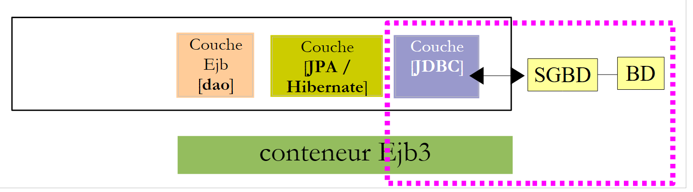 |
 |
- In the [Services] tab, start the GlassFish server [2, 3]
- In the [Projects] tab, right-click on the EJB project and in [5] select the [New / Other] option to add an element to the project.

- In [6], select the [Glassfish] category, and in [7], specify that you want to create a JDBC resource by selecting the [JDBC Resource] type
- In [8], specify that this JDBC resource will use its own connection pool
- In [9], give the JDBC resource a name
- In [10], proceed to the next step
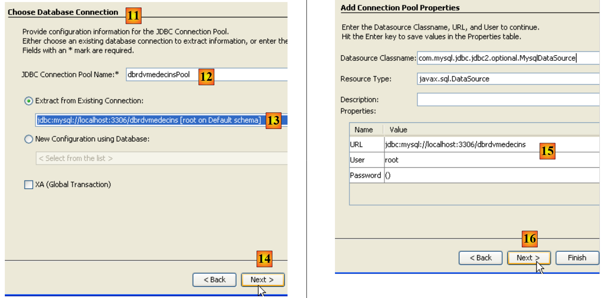 |
- In [11], define the characteristics of the JDBC resource’s connection pool
- In [12], give the connection pool a name
- In [13], select the NetBeans connection [dbrdvmedecins] created earlier
- in [14], proceed to the next step
- In [15], there is normally nothing to change on this page. The properties of the connection to the MySQL database [dbrdvmedecins] were taken from those of the NetBeans connection [dbrdvmedecins] created previously
- In [16], proceed to the next step
 |
- in [17], keep the default values provided
- in [18], finish the wizard. This creates the [sun-resources.xml] file [19] with the following content:
The file above contains all the information entered in the wizard in XML format. It will be used by the NetBeans IDE to instruct the GlassFish server to create the "jdbc/dbrdvmedecins" resource defined on line 4.
The persistence unit [persistence.xml] configures the JPA layer: it specifies the JPA implementation used (TopLink, Hibernate, etc.) and configures it.
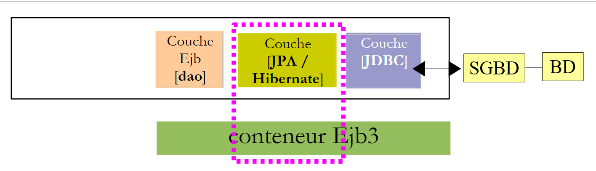 |
 |
- In [1], right-click on the EJB project and select [New / Other] in [2]
- In [3], select the [Persistence] category, then in [4], indicate that you want to create a JPA persistence unit
 |
- In [5], give the created persistence unit a name
- In [6], choose [Hibernate] as the JPA implementation
- In [7], select the GlassFish resource "jdbc/dbrdvmedecins" that was just created
- in [8], specify that no action should be performed on the database when instantiating the JPA layer
- Finish the wizard
- In [9], the [persistence.xml] file created by the wizard
Its content is as follows:
Once again, it converts the information provided in the wizard into XML format. This file is insufficient for working with the MySQL5 database "dbrdvmedecins". We would need to specify the type of DBMS to be managed to Hibernate. This will be done later.
 |
 |
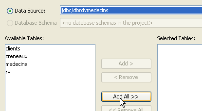 |
- In [1], right-click on the project and in [2] select the [New / Other] option
- In [3], select the [Persistence] category, then in [4], indicate that you want to create JPA entities from an existing database.
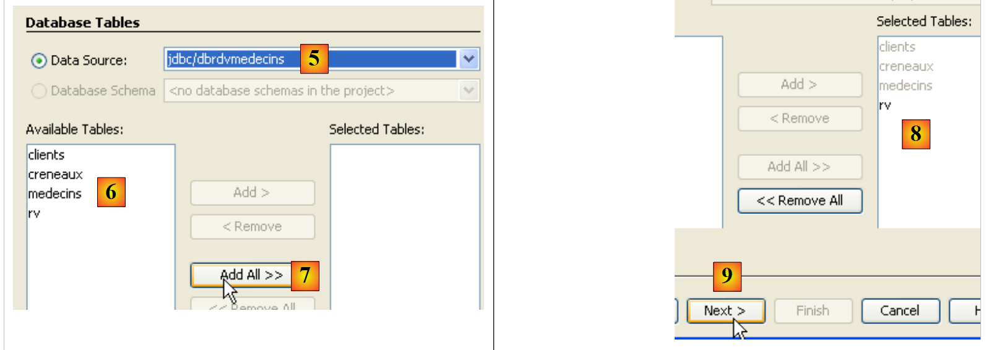 |
- In [5], select the JDBC source "jdbc/dbrdvmedecins" that we created
- In [6], select the four tables from the associated database
- In [7,8], include them all in the generation of JPA entities
- In [9], continue with the wizard
 |
- In [10], the JPA entities that will be generated
- in [11], name the JPA entities package
- in [12], choose the Java type that will encapsulate the lists of objects returned by the JPA layer
- Finish the wizard
- in [13], the four generated JPA entities, one for each database table.
Here is, for example, the code for the [Rv] entity, which represents a row in the [rv] table of the [dbrdvmedecins] database.
Creating the EJB layer for accessing JPA entities
 |
 |
- In [1], right-click on the project and in [2], select the [New / Other] option
- in [3], select the [Persistence] category, then in [4] select the [Session Beans for Entity Classes] type
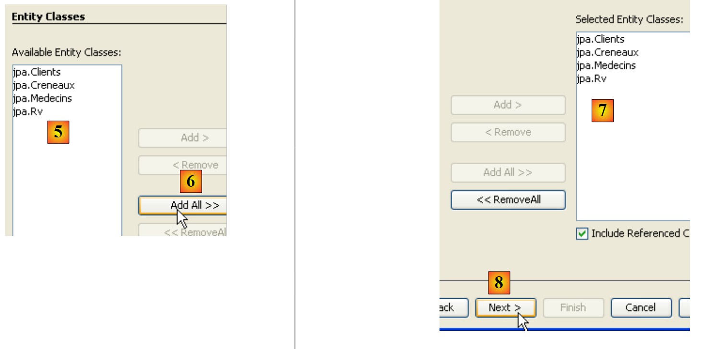 |
- in [5], the JPA entities created previously are displayed
- In [6], select them all
- In [7], they have been selected
- In [8], continue with the wizard
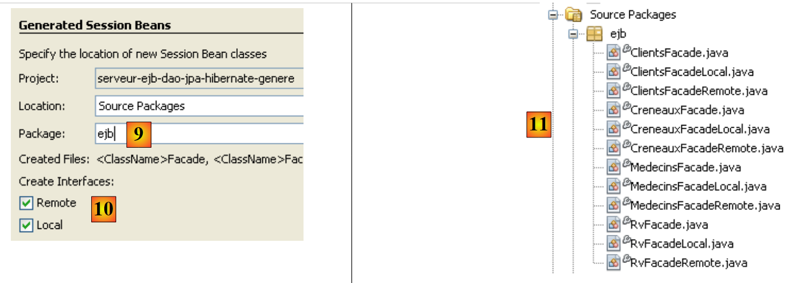 |
- In [9], give a name to the package for the EJBs that will be generated
- In [10], specify that the EJBs must implement both a local and a remote interface
- Finish the wizard
- in [11], the generated EJBs
Here, for example, is the EJB code that manages access to the [Rv] entity, and thus to the [rv] table in the [dbrdvmedecins] database:
As mentioned, automatic code generation can be very useful for getting a project started and learning about JPA entities and EJBs. In the following sections, we will rewrite the JPA and EJB layers with our own code, but the reader will recognize information we just covered in the automatic generation of the layers.
4.6. The NetBeans project for the EJB module
We create a new empty EJB module (see section 4.5):
 |
- The [rdvmedecins.entites] package contains the entities of the JPA layer
- the package [rdvmedecins.dao] implements the EJB for the [dao] layer
- the [rdvmedecins.exceptions] package implements an application-specific exception class
In the following, we assume that the reader has followed all the steps in section 4.5. They will need to repeat some of them.
4.6.1. Configuring the JPA layer
Let’s review the architecture of our client/server application:
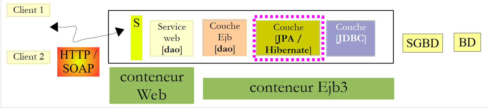 |
The NetBeans project:
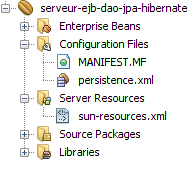 |
The [JPA] layer is configured by the [persistence.xml] and [sun-resources.xml] files above. These two files are generated by wizards we have already encountered:
- The generation of the [sun-resources.xml] file was described in Section 4.5.
- The generation of the [persistence.xml] file was described in section 4.5.
The generated [persistence.xml] file must be modified as follows:
- Line 3: The transaction type is JTA: transactions will be managed by the GlassFish EJB3 container
- line 4: A JPA/Hibernate implementation is used. To this end, the Hibernate library has been added to the GlassFish server (see section 4.4).
- line 5: the JTA data source used by the JPA layer has the JNDI name "jdbc/dbrdvmedecins".
- Line 8: This line is not generated automatically. It must be added manually. It tells Hibernate that the DBMS used is MySQL5.
The "jdbc/dbrdvmedecins" data source is configured in the following [sun-resources.xml] file:
- Lines 8–10: The JDBC properties of the data source (database URL, username, and password). The MySQL database `dbrdvmedecins` is the one described in Section 4.1.
- Line 7: The characteristics of the connection pool associated with this data source
4.6.2. The entities of the JPA layer
Let’s review the architecture of our client/server application:
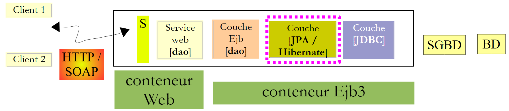 |
The NetBeans project:
 |
The [rdvmedecins.entites] package implements the [Jpa] layer.
In Section 4.5, we saw how to automatically generate JPA entities for an application. We will not use this technique here but will define the entities ourselves. However, these will incorporate much of the code generated in Section 4.5. Here, we want the [Medecin] and [Client] entities to be child classes of a [Personne] class.
The Person class is used to represent doctors and clients:
- Line 3: Note that the [Person] class is not itself an entity (@Entity). It will be the parent class of entities. The @MappedSuperClass annotation indicates this situation.
The [Client] entity encapsulates the rows of the [clients] table. It derives from the previous [Person] class:
- Line 3: The [Client] class is a JPA entity
- line 4: it is associated with the [clients] table
- line 5: it derives from the [Person] class
The [Doctor] entity, which encapsulates the rows of the [doctors] table, follows the same pattern:
The [Creneau] entity encapsulates the rows of the [creneaux] table:
- Lines 15–17 model the "one-to-many" relationship between the [slots] table and the [doctors] table in the database.
The [Rv] entity encapsulates the rows of the [rv] table:
- Lines 15–17 model the "one-to-many" relationship between the [rv] table and the [clients] table in the database, and lines 18–20 model the "one-to-many" relationship between the [rv] table and the [slots] table
4.6.3. The exception class
 |
The application's exception class [ RdvMedecinsException] is as follows:
- Line 6: The class extends the [RuntimeException] class. Therefore, the compiler does not require it to be handled with try/catch blocks.
- line 5: the @ApplicationException annotation ensures that the exception will not be "swallowed" by an [EjbException].
To understand the @ApplicationException annotation, let’s revisit the server-side architecture:
 |
The [RdvMedecinsException] exception will be thrown by the EJB methods in the [dao] layer within the EJB3 container and intercepted by it. Without the @ApplicationException annotation, the EJB3 container encapsulates the exception that occurred within an [EjbException] and rethrows it. You may not want this encapsulation and prefer to let an exception of type [RdvMedecinsException] escape from the EJB3 container. This is what the @ApplicationException annotation allows. Furthermore, the (rollback=true) attribute of this annotation instructs the Ejb3 container that if an exception of type [RdvMedecinsException] occurs within a method executed as part of a transaction with a DBMS, the transaction must be rolled back. In technical terms, this is called rolling back the transaction.
4.6.4. The EJB of the [dao] layer
 |
 |
The Java interface [ IDao] of the [dao] layer is as follows:
The EJB's local interface [IDaoLocal] simply extends the previous [IDao] interface:
The same applies to the remote interface [IDaoRemote]:
The EJB [DaoJpa] implements both the local and remote interfaces:
- Line 3 indicates that the remote EJB is named "rdvmedecins.dao"
- Line 4 indicates that all methods of the EJB are executed within a transaction managed by the EJB3 container.
- Line 5 shows that the EJB implements the local and remote interfaces.
The complete EJB code is as follows:
1 2 3 4 5 6 7 8 9 10 11 12 13 14 15 16 17 18 19 20 21 22 23 24 25 26 27 28 29 30 31 32 33 34 35 36 37 38 39 40 41 42 43 44 45 46 47 48 49 50 51 52 53 54 55 56 57 58 59 60 61 62 63 64 65 66 67 68 69 70 71 72 73 74 75 76 77 78 79 80 81 82 83 84 85 86 87 88 89 90 91 92 93 94 95 96 97 98 99 100 101 102 103 104 105 106 107 108 | |
- Line 8: the EntityManager object that manages access to the persistence context. When the class is instantiated, this field will be initialized by the EJB container using the @PersistenceContext annotation on line 7.
- line 15: JPQL query that returns all rows from the [clients] table as a list of [Client] objects.
- line 22: a similar query for doctors
- Line 32: A JPQL query performing a join between the [slots] and [doctors] tables. It is parameterized by the doctor’s ID.
- Line 43: A JPQL query performing a join between the [appointments], [slots], and [doctors] tables and having two parameters: the doctor’s ID and the appointment date.
- Lines 55–57: creation of an appointment and its subsequent persistence in the database.
- Line 67: Deletes an appointment from the database.
- Line 76: performs a SELECT query on the database to find a specific client
- Line 85: Same for a doctor
- line 94: same for an appointment
- Line 103: same for a time slot
- All operations involving the persistence context from line 9 are likely to encounter a problem with the database. Therefore, they are all enclosed in a try/catch block. Any exception is encapsulated in the custom exception RdvMedecinsException.
Once compiled, the EJB module generates a .jar file named " ":
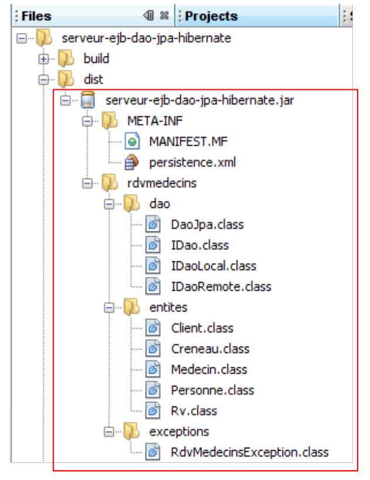 |
4.7. Deploying the [DAO] layer EJB with NetBeans
NetBeans allows you to easily deploy the previously created EJB to the GlassFish server.
 |
- In the EJB project properties, check the runtime options [1].
- In [2], the name of the server on which the EJB will be deployed
- In the [Services] tab [3], launch it [4].
 |
- In [5], the GlassFish server once it has been launched. It does not yet have an EJB module.
- Start the MySQL server and ensure that the [dbrdvmedecins] database is online. To do this, you can use the NetBeans connection created in section 4.5.
- In the [Projects] tab [6], deploy the EJB module [7]: the MySQL5 DBMS must be running for the JDBC resource "jdbc/dbrdvmedecins" used by the EJB to be accessible.
- In [8], the deployed EJB appears in the GlassFish server tree
 |
- In [9], remove the deployed EJB
- In [10], the EJB no longer appears in the GlassFish server tree.
4.8. Deploying the EJB from the [DAO] layer with GlassFish
Here we show how to deploy an EJB to the GlassFish server from its .jar archive.
- Start the MySQL server and ensure that the [dbrdvmedecins] database is online. To do this, you can use the NetBeans connection created in Section 4.5.
Let’s review the JPA configuration of the EJB module to be deployed. This configuration is defined in the [persistence.xml] file:
Line 5 indicates that the JPA layer uses a JTA data source, i.e., one managed by the EJB3 container, named "jdbc/dbrdvmedecins".
We saw in Section 4.5 how to create this JDBC resource using NetBeans. Here, we show how to do it directly with GlassFish. We follow the procedure described in Section 13.1.2, page 79 of [ref1].
We begin by deleting the resource so that we can recreate it. We do this from NetBeans:
 |
- in [1], the JDBC resources of the GlassFish server
- in [2], the "jdbc/dbrdvmedecins" resource of our EJB
- in [3], the connection pool for this JDBC resource
 |
- in [4], we delete the connection pool. This will have the effect of deleting all JDBC resources that use it, including the "jdbc/dbrdvmedecins" resource.
- in [5] and [6], the JDBC resource and the connection pool have been destroyed.
Now, we use the GlassFish server administration console to create the JDBC resource and deploy the EJB.
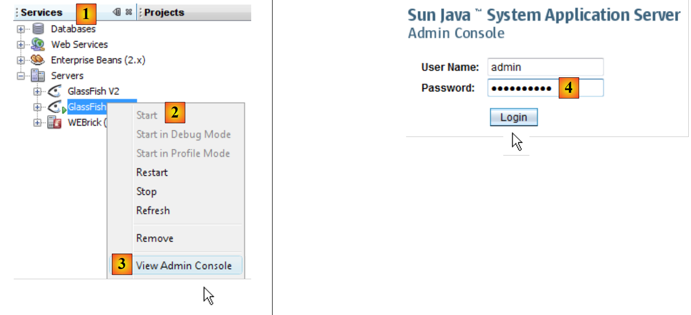 |
- In the [Services] tab [1] of NetBeans, start the GlassFish server [2] and then access [3] its administration console
- In [4], log in as an administrator (password: adminadmin if you haven’t changed it during installation or afterward).
 |
- In [5], select the [Connection Pools] branch of the GlassFish resources
- In [6], create a new connection pool. Note that a connection pool is a technique for limiting the number of connections opened and closed with a DBMS. When the server starts, N connections—a number defined by configuration—are opened to the DBMS. These open connections are then made available to EJBs that request them to perform an operation with the DBMS. As soon as the operation is complete, the EJB returns the connection to the pool. The connection is never closed; it is shared among the various threads accessing the DBMS
- in [7], give the pool a name
- in [8], the class modeling the data source is the [javax.sql.DataSource] class
- in [9], the DBMS containing the data source is MySQL here.
- in [10], proceed to the next step
 |
- in [11], the "Connection Validation Required" attribute ensures that before granting a connection, the pool verifies that it is operational. If not, it creates a new one. This allows an application to continue functioning after a temporary outage with the DBMS. During the outage, no connections are usable, and exceptions are thrown to the client. When the outage ends, clients that continue to request connections obtain them again: thanks to the "Connection Validation Required" attribute, all connections in the pool will be recreated. Without this attribute, the pool would detect that the initial connections have been lost but would not attempt to recreate new ones.
- In [12], the "Read Committed" isolation level is specified for transactions. This level ensures that a transaction T2 cannot read data modified by a transaction T1 until the latter is fully completed.
- In [13], we specify that all transactions must use the isolation level specified in [12]
 |
- In [14] and [15], specify the URL of the database whose connections are managed by the pool
- In [16], the user will be root
- In [17], add a property
- In [18], add the "Password" property with the value () in [19]. Although the screenshot [19] does not show it, do not enter an empty string; instead, enter () (opening parenthesis, closing parenthesis) to indicate an empty password. If the root user of your MySQL DBMS has a non-empty password, enter that password.
- In [20], finish the connection pool creation wizard for the MySQL database [dbrdvmedecins].
 |
- In [21], the pool has been created. Click on its link.
- In [22], the [Ping] button allows you to establish a connection with the [dbrdvmedecins] database
- In [23], if everything goes well, a message indicates that the connection was successful
Once the connection pool has been created, you can create a JDBC resource:
 |
- In [1], select the [JDBC Resources] branch from the server object tree
- In [2], create a new JDBC resource
- In [3], give the JDBC resource a name. This must match the name used in the [persistence.xml] file:
- In [4], specify the connection pool that the new JDBC resource should use: the one you just created
- In [5], we finish the creation wizard
 |
- In [6], the new JDBC resource
Now that the JDBC resource has been created, you can deploy the EJB’s JAR file:
 |
- In [1], select the [Enterprise Applications] branch
- In [2], click the [Deploy] button to indicate that you want to deploy a new application
- In [3], specify that the application is an EJB module
- In [4], select the EJB JAR file [serveur-ejb-dao-jpa-hibernate.jar] that was provided to you for the lab.
- In [5], you can change the name of the EJB module if you wish
- In [6], complete the EJB module deployment wizard
 |
- In [7], the EJB module has been deployed. It can now be used.
4.9. Testing the EJB of the [DAO] layer
Now that the EJB for the [DAO] layer of our application has been deployed, we can test it. We will do this using the following Java client:
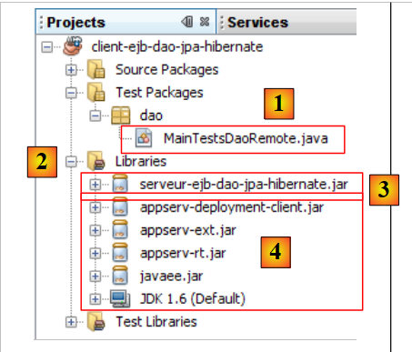 |
The [MainTestsDaoRemote] class [1] is a JUnit 4 test class. The libraries in [2] consist of:
- the [DAO] layer EJB JAR [3] (see section 4.6.4).
- the GlassFish libraries [4] required for remote EJB clients.
The test class is as follows:
- Line 13: Note the instantiation of the remote EJB proxy. We use its JNDI name "rdvmedecins.dao".
- The test methods use the methods exposed by the EJB (see section 4.6.4).
If all goes well, the tests should pass:
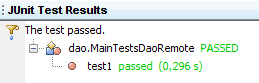 |
Now that the EJB of the [dao] layer is operational, we can proceed to expose it publicly via a web service.
4.10. The [dao] layer’s web service
For a brief introduction to the concept of a web service, see section 14, page 111 of [ref1].
Let’s return to the server architecture of our client/server application:
 |
We are focusing here on the [DAO] layer’s web service. The sole purpose of this service is to make the [DAO] layer’s EJB interface available to cross-platform clients capable of communicating with a web service.
Recall that there are two ways to implement a web service:
- using a class annotated with @WebService that runs in a web container
 |
- using an EJB annotated with @WebService that runs in an EJB container
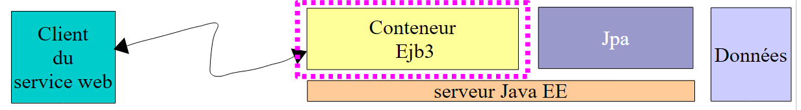 |
Here, we use the first solution. In the NetBeans IDE, we need to create an enterprise project with two modules:
- the EJB module that will run in the EJB container: the EJB of the [DAO] layer.
- the web module that will run in the web container: the web service we are currently building.
We will build this enterprise project in two ways.
4.10.1. NetBeans Project - Version 1
First, we create a NetBeans project of the "Web Application" type:
 |
- In [1], create a new project in the "Java Web" category [2] of the "Web Application" type [3].
 |
- In [4], we name the project, and in [5] we specify the folder where it should be generated
- In [6], we specify the application server that will run the web application
- In [7], set the application context
- In [8], validate the project configuration.
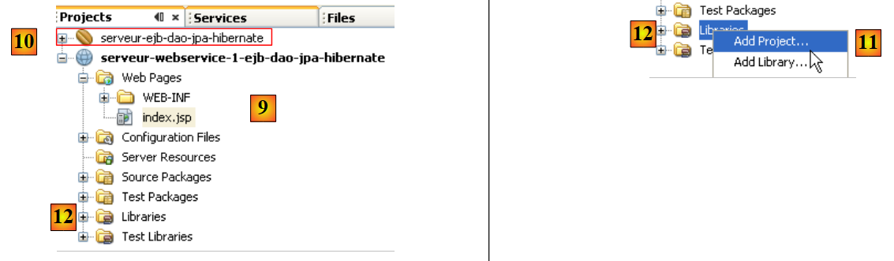 |
- In [9], the generated project. The web service we are building will use the EJB from the previous project [10]. Therefore, it needs to reference the .jar file of the EJB module [10].
- In [11], add a NetBeans project to the web project’s libraries [12]
 |
- In [13], select the EJB module folder in the file system and confirm.
 |
- In [14], the EJB module has been added to the web project’s libraries.
In [15], we implement the web service with the following [WsDaoJpa] class:
- Line 4: The [WsdaoJpa] class implements the [IDao] interface. Recall that this interface is defined in the EJB archive of the [dao] layer as follows:
- Line 3: The @WebService annotation makes the [WsDaoJpa] class a web service.
- Lines 6–7: The reference to the EJB in the [DAO] layer will be injected by the application server into the field on line 7. Note that it is always the local implementation (IDaoLocal in this case) that is injected. This injection is possible because the web service runs in the same JVM as the EJB.
- All methods of the web service are tagged with the @WebMethod annotation to make them visible to remote clients. A method not tagged with the @WebMethod annotation would be internal to the web service and not visible to remote clients. Each method M of the web service simply calls the corresponding method M of the EJB injected in line 7.
The creation of this web service is reflected by a new branch in the NetBeans project:
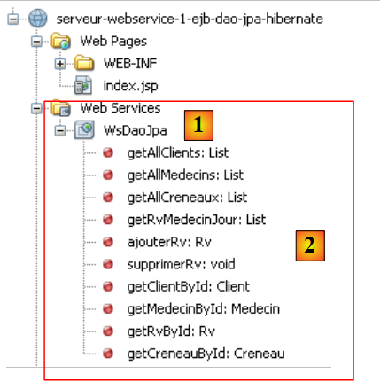 |
We see in [1] the WsDaoJpa web service and in [2] the methods it exposes to remote clients.
Let’s review the architecture of the web service under construction:
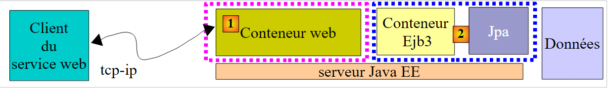 |
The components of the web service we are going to deploy are:
- [1]: the web module we just built
- [2]: the EJB module we built in a previous step, on which the web service depends
To deploy them together, we need to combine the two modules into a NetBeans "enterprise" project:
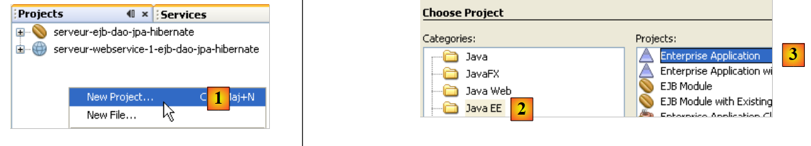 |
In [1], create a new enterprise project [2, 3].
 |
- In [4,5], we name the project and specify its creation directory
- In [6], select the application server on which the enterprise application will be deployed
- In [7], an enterprise project can have three components: web application, EJB module, and client application. Here, the project is created without any components. These will be added later.
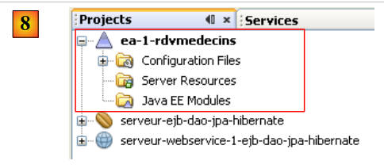 |
- In [8], the newly created enterprise application.
 |
- In [9], right-click on [Java EE Modules] and add a new module
- In [10], only the NetBeans modules currently open in the IDE are displayed. Here, we select the web module [web-service-server-1-ejb-dao-jpa-hibernate] and the EJB module [ejb-server-dao-jpa-hibernate] that we have built.
- In [11], the two modules added to the enterprise project.
We now need to deploy this enterprise application on the GlassFish server. Next, the MySQL DBMS must be started so that the JDBC data source "jdbc/dbrdvmedecins" used by the EJB module is accessible.
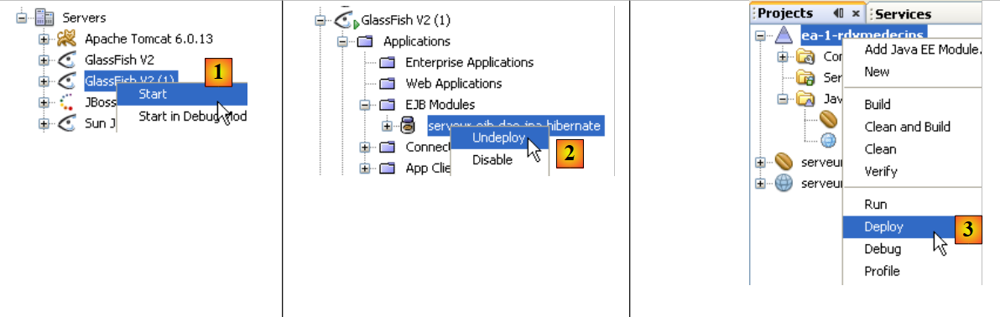 |
- In [1], we start the GlassFish server
- If the EJB module [ejb-server-dao-jpa-hibernate] is deployed, we unload it [2]
- In [3], deploy the enterprise application
 |
- In [4], it is deployed. We can see that it contains both modules: Web and EJB.
4.10.2. NetBeans Project - Version 2
We will now show how to deploy the web service when you do not have the source code for the EJB module but only its .jar archive.
The new NetBeans project for the web service will be as follows:
 |
The notable elements of the project are as follows:
- [1]: The web service is implemented by a NetBeans project of type [Web Application].
- [2]: The web service is implemented by the [WsDaoJpa] class, which we have already studied
- [3]: the EJB archive for the [DAO] layer, which allows the [WsDaoJpa] class to access the definitions of the various classes, interfaces, and entities in the [DAO] and [JPA] layers.
We then build the enterprise project required to deploy the web service:
 |
- [1] We create an enterprise application [ea-rdvmedecins], initially without any modules.
- In [2], we add the previous web module [webservice-ejb-dao-jpa-hibernate]
- in [3], the result.
As is, the enterprise application [ea-rdvmedecins] cannot be deployed to the GlassFish server from NetBeans. An error occurs. You must therefore manually deploy the [ea-rdvmedecins] application’s EAR archive:
 |
- The [ea-rdvmedecins.ear] archive is located in the [dist] folder [2] of the [Files] tab in NetBeans.
- In this archive [3], you will find the two components of the enterprise application:
- the EJB archive [ejb-server-dao-jpa-hibernate]. This archive is present because it was part of the libraries referenced by the web service.
- the web service archive [webservice-server-ejb-dao-jpa-hibernate].
- The archive [ea-rdvmedecins.ear] is created by a simple build [4] of the enterprise application.
- In [5], the deployment operation fails.
To deploy the enterprise application archive [ea-rdvmedecins.ear], we proceed as shown when deploying the EJB archive [ejb-server-dao-jpa-hibernate.jar] in section 4.2. We again use the GlassFish server’s web administration client. We will not repeat steps already described.
First, we will begin by "unloading" the enterprise application deployed in section 4.10.1:
 |
- [1]: Select the [Enterprise Applications] branch of the GlassFish server
- in [2] select the enterprise application to unload, then in [3] unload it
- in [4], the enterprise application has been unloaded
 |
- In [1], select the [Enterprise Applications] branch of the GlassFish server
- in [2], deploy a new enterprise application
- In [3], select the [Enterprise Application] type
- In [4], specify the .ear file for the NetBeans project [ea-rdvmedecins]
- In [5], deploy this archive
 |
- In [6], the application has been deployed
- in [7], the web service [WsDaoJpa] appears in the [Web Services] branch of the GlassFish server. Select it.
- In [8], you have various details about the web service. The most relevant information for a client is [9]: the web service’s URI.
- In [10], you can test the web service
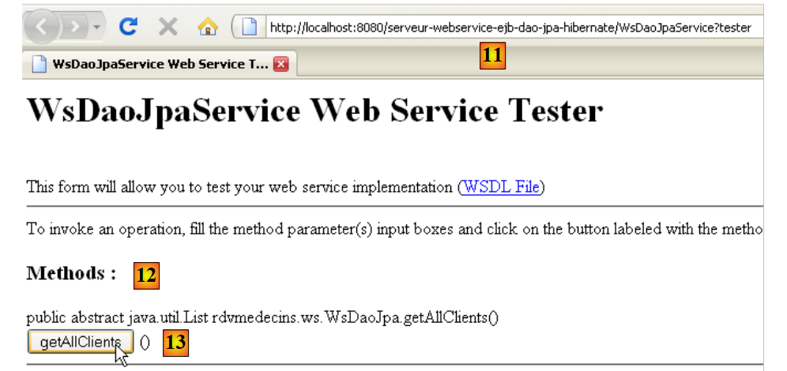 |
- In [11], the web service URI to which the parameter ?test has been added. This URI displays a test page. All methods (@WebMethod) exposed by the web service are displayed and can be tested. Here, we test method [13], which retrieves the list of clients.
 |
- In [14], we show only a partial view of the response page. But we can see that the getAllClients method did indeed return the list of clients. The screenshot shows that it sends its response in XML format.
A web service is fully described by an XML file called a WSDL file:
 |
- In [1] in the GlassFish server administration web tool, select the [WsDaoJpa] web service
- In [2], follow the [View WSDL] link
 |
- In [3]: the URI of the WSDL file. This is important information to know. It is required to configure clients for this web service.
- In [4], the XML description of the web service. We will not comment on this complex content.
4.10.3. JUnit Tests for the Web Service
We create a NetBeans project to "run" the tests previously performed with an EJB client, this time using a client for the recently deployed web service. Here, we follow a procedure similar to the one described in section 14.2.1, page 115 of [ref1].
 |
- in [1], a classic Java project
- In [2], the test class
- in [3], the client uses the EJB archive to access the definitions of the [DAO] layer interface and the JPA entities. Note that this archive is located in the [dist] subfolder of the EJB module folder.
To access the remote web service, proxy classes must be generated:
 |
In the diagram above, layer [2] [C=Client] communicates with layer [1] [S=Server]. To interact with layer [S], the client [C] must establish a network connection with layer [S] and communicate with it using a specific protocol. The network connections are TCP connections, and the transport protocol is HTTP. The [S] layer, which represents the web service, is implemented by a Java servlet running on the GlassFish server. We did not write this servlet. Its generation is automated by GlassFish based on the @WebService and @WebMethod annotations in the [WsDaoJpa] class that we wrote. Similarly, we will automate the generation of the client layer [C]. The [C] layer is sometimes called a proxy layer for the remote web service, with the term "proxy" referring to an intermediary element in a software chain. Here, the C proxy acts as the intermediary between the client we are about to write and the web service we have deployed.
With NetBeans 6.5, the C proxy can be generated as follows (for the rest of the process, the web service must be running on the GlassFish server):
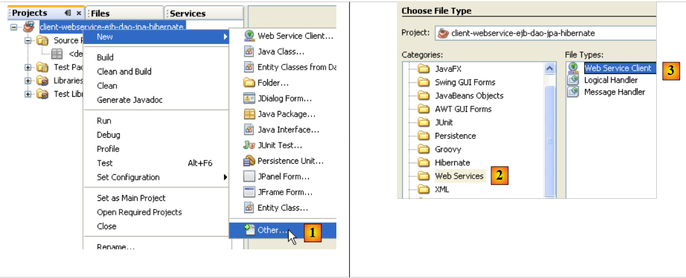 |
- In [1], add a new element to the Java project
- in [2], select the [Web Services] branch
- in [3], select [Web Service Client]
 |
- in [4], provide the URI of the web service’s WSDL file. This URI was presented in section 4.10.2.
- In [5], leave the default value [JAX-WS]. The other possible value is [JAX-RPC]
- After confirming the web service proxy creation wizard, the NetBeans project was expanded to include a [Web Service References] branch [6]. This branch displays the methods exposed by the remote web service.
 |
- In the [Files] tab [7], Java source code has been added [8]. It corresponds to the generated C proxy.
- In [9] is the code for one of the classes. We can see [10] that they have been placed in a package [rdvmedecins.ws]. We will not comment on the code for these classes, which is again quite complex.
For the Java client we are building, the generated C proxy acts as an intermediary. To access method M of the remote web service, the Java client calls method M of the C proxy. The Java client thus calls local methods (executed in the same JVM), and transparently to it, these local calls are translated into remote calls.
We still need to know how to call the C proxy’s M methods. Let’s return to our JUnit test class:
 |
In [1], the test class [MainTestsDaoRemote] is the one already used when testing the EJB of the [dao] layer:
- line [13], the test1 test remains unchanged.
- line [9], the contents of the [init] method have been deleted.
At this point, the project contains errors because the [test1] test method uses the [Client], [Medecin], [Creneau], and [Rv] entities, which are no longer in the same packages as before. They are now in the generated C proxy package. We remove the relevant import statements and regenerate them using the Fix Imports operation.
 |
Let’s return to the code for the test class [MainTestsDaoRemote]:
The [init] method on line 10 must initialize the reference to the [dao] layer on line 7. We need to know how to use the generated C proxy in our code. NetBeans helps us with this process.
 |
- Select the [getAllClients] method of the web service in [1] with the mouse, then drag this method and drop it into the [init] method of the test class.
We get the result [2]. This code skeleton shows us how to use the generated C proxy:
- Line [5] shows that the [getAllClients] method is a method of the [WsDaoJpa] object defined on line 3. The [WsDaoJpa] type is an interface that exposes the same methods as those exposed by the remote web service.
- In line [3], the [WsDaoJpaPort] object is obtained from another object of type [WsDaoJpaService] defined in line 2. The [WsDaoJpaService] type represents the locally generated C proxy.
- Access to the remote web service may fail, so the entire code block is enclosed in a try/catch block.
- The C proxy objects are in the [rdvmedecins.ws] package
Once this code is understood, we see that the local reference to the remote web service can be obtained using the following code:
The code for the JUnit test class then becomes the following:
We are now ready for testing:
 |
In [1], the JUnit test is executed. In [2], it passes. If we look at the output on the NetBeans console, we see lines like the following:
Liste des clients :
rdvmedecins.ws.Client@1982fc1
rdvmedecins.ws.Client@676437
rdvmedecins.ws.Client@1e4853f
rdvmedecins.ws.Client@1e808ca
On the server side, the [Client] entity has a toString method that displays the various fields of a [Client] object. During the automatic generation of the C proxy, the entities are created in the C proxy but with only the private fields accompanied by their get/set methods. Thus, the toString method was not generated in the [Client] entity of the C proxy. This explains the previous display. This does not detract from the JUnit test: it passed. We will now consider that we have an operational web service.